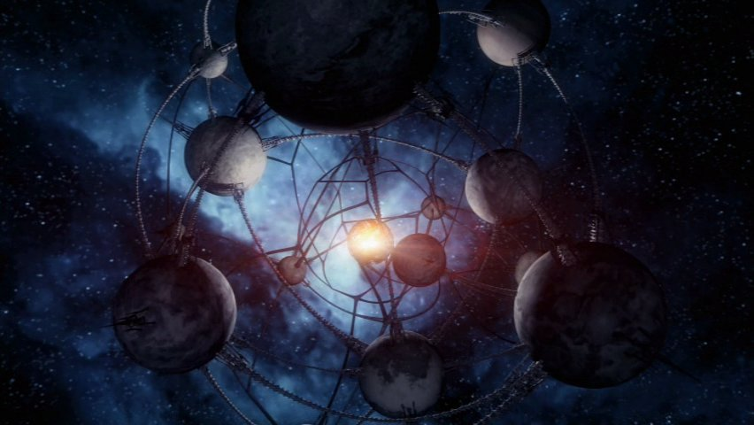

She began her life and career in the Newport News Orbital Shipyards above Earth,
where her keel was laid in CY 9768.
CY 9770
Construction proceeded for a period of 4 years,
through to the delivery and installation of the Headwaters of Invention Mark VIII Slipstream drive in CY 9772.
CY 9772
Several years after her commissioning,
the Andromeda experienced her first combat action,
when she served as the head of a task force created to repel the Magog.
CY 9774
The Andromeda herself played an instrumental role in leading the attack,
as it included Fatima Novarro and the crew actually
having to fight in close quarters combat against a Magog horde
CY 9777
Under the command of the Perseid Perim,
the Andromeda was sent on a top secret mission to ascertain the
source of the Magog invasions that began to plague the Commonwealth.
CY 9779
The Magog are heading towards the Arkology, an old space station with a vast population.
The crew of the Andromeda try to warn Arkology to defend themselves,
but the Arkology hope to create a peace treaty with the Magog.
CY 9782
The people of the Arkology, misjudge the Magog and are subsequently destroyed
after a battle that leaves the Andromeda almost destroyed
CY 9784
With the Andromeda horribly crippled, the Magog starts targeting
vital systems on the ship, preparing to outright destroy the ship
CY 9786
Out of nowhere, a Nietzschean Battle Group come attacking directly
out of Slipstream, destroying the Magog Worldship, and thus helping the Andromeda
begin its journey home.
.jpg)